owners: Noa & Anat
Meet our dogs
ג׳ימי הוא גור שובב, מלא חיים ואנרגיות. הוא חברותי מאוד, אוהב אנשים וכלבים אחרים. ג׳ימי עוד לומד את העולם, וכבר עכשיו אפשר לראות את התכונות הבולטות שלו. הוא דואג למשפחה, מגונן, ומפגין רגשות בצורה שאי אפשר להתעלם ממנה. ג׳ימי חכם במיוחד ולומד במהירות כל דבר חדש. אחת ההתנהגויות המצחיקות שלו היא שכל פעם שהוא רוצה לצאת לטיול, הוא ניגש אלינו, לוקח את הרצועה בפה ומתחיל ללכת לכיוון הדלת כאילו אומר: "יאללה, בואו".
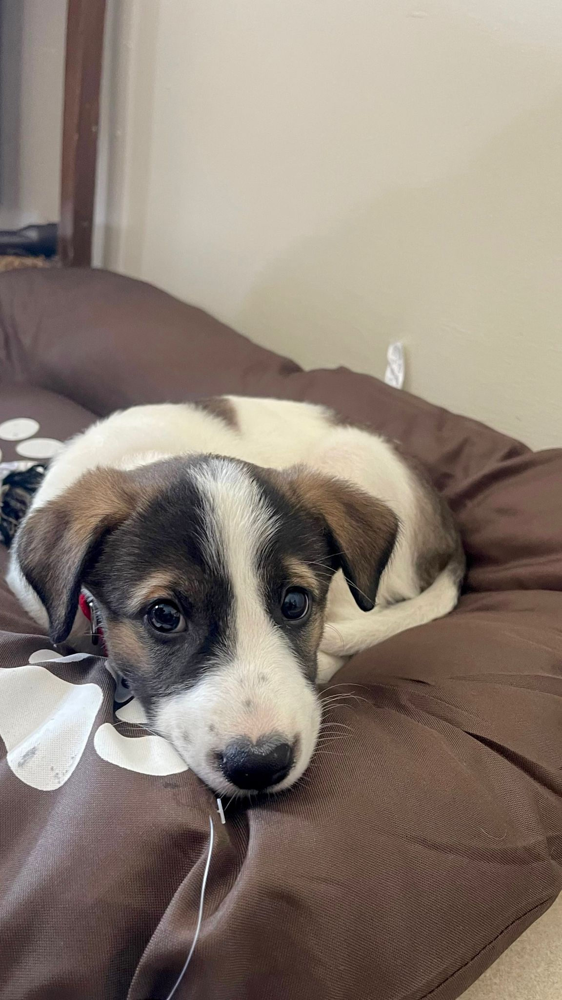
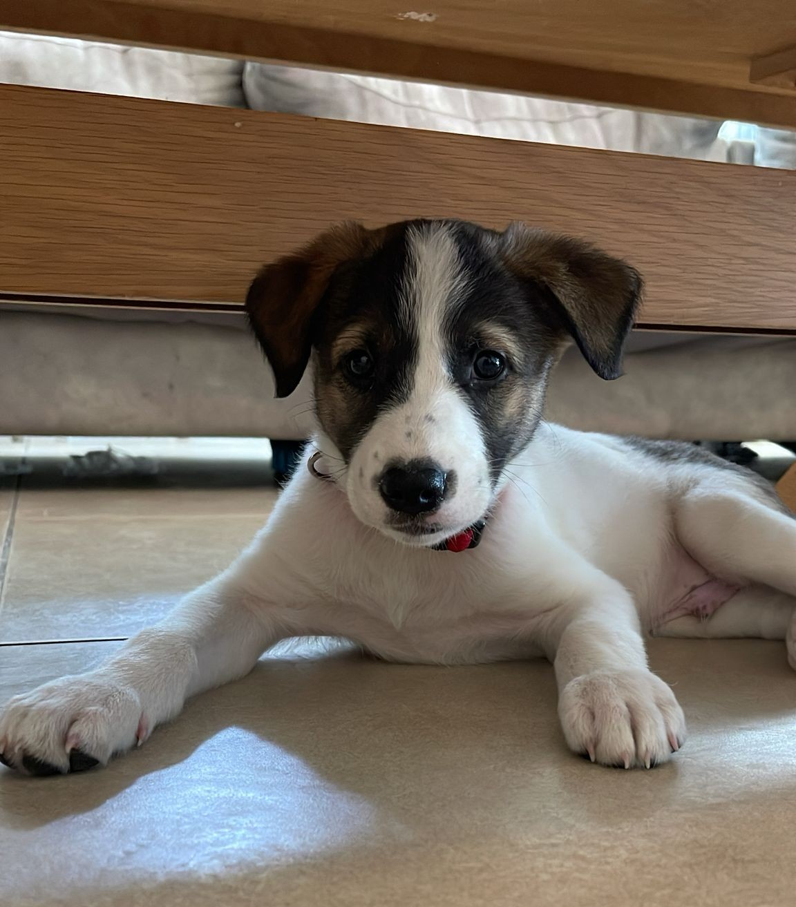
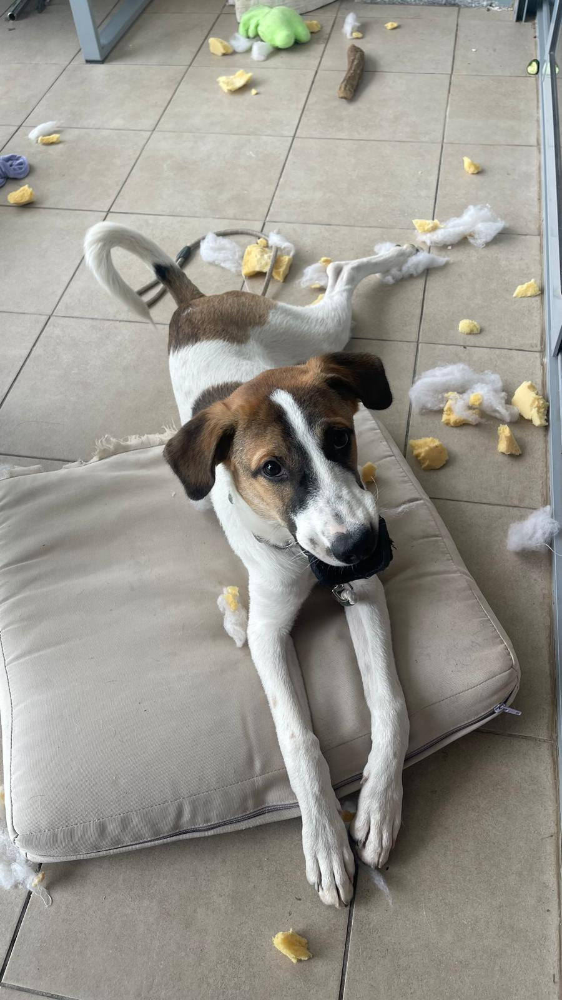
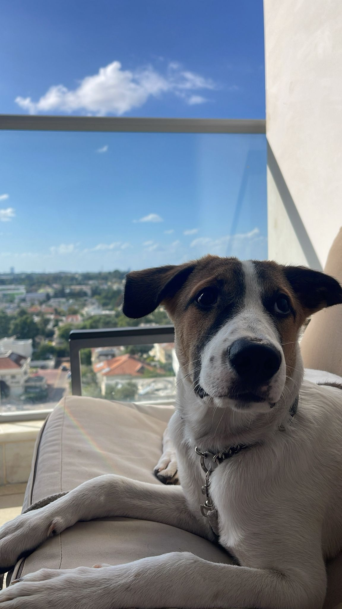
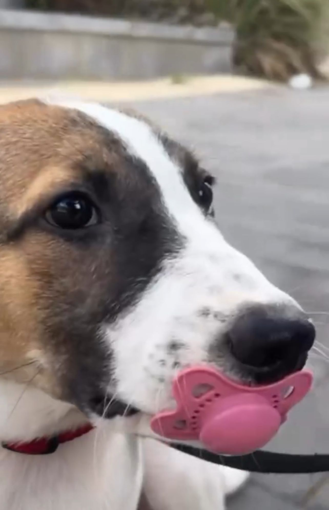
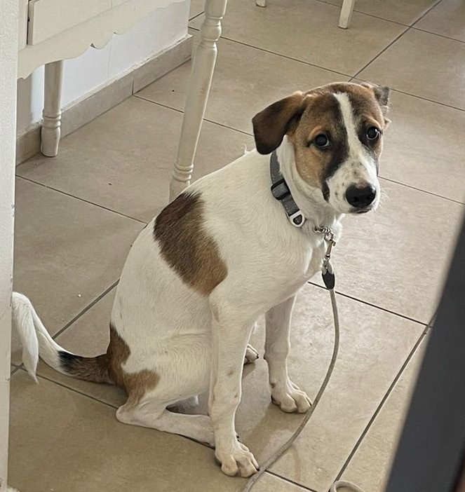
ניקה היא כלבה מאוד חברותית ואוהבת אנשים. אימצתי אותה כשהיא הייתה תינוקת והיום היא כבר בת 7. מאז שהיא קטנה האוכל האהוב עליה הוא במבה ונקניקיות, והדבר שהיא הכי אוהבת בעולם הוא לצאת לרוץ בטיילת. ניקה מאוד תלותית ולא אוהבת להיות לבד, והיא אוהבת את המשפחה שלה בלי סוף. יש לה 3 אחיות ואח, והיא נפגשת לשחק איתם כל כמה שבועות.
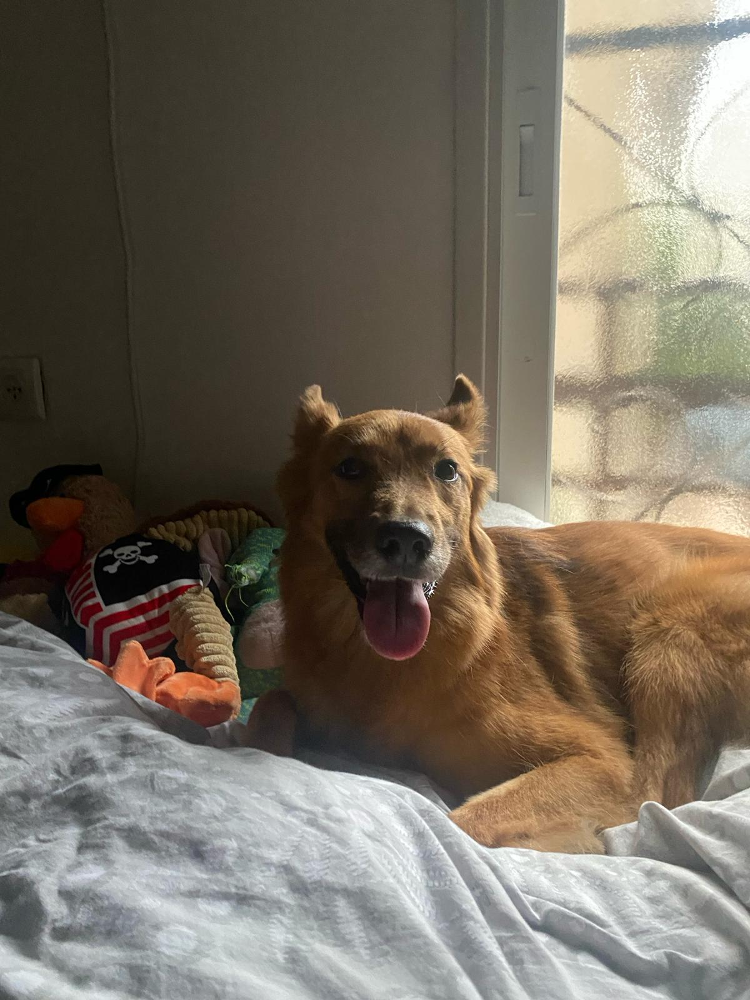
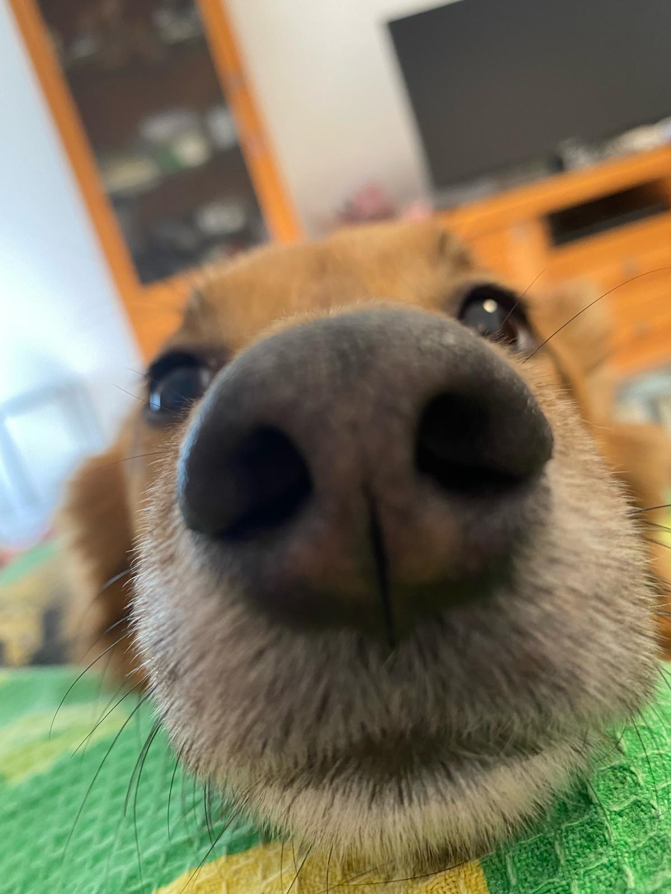
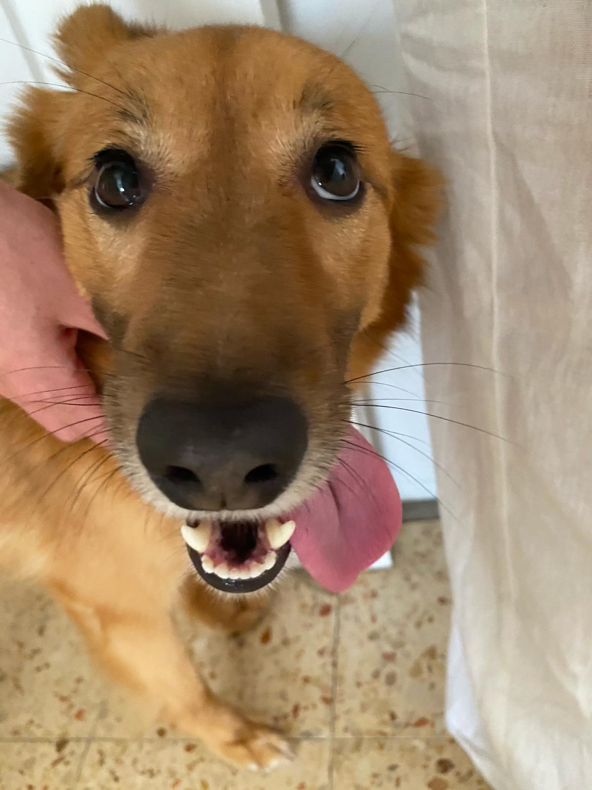
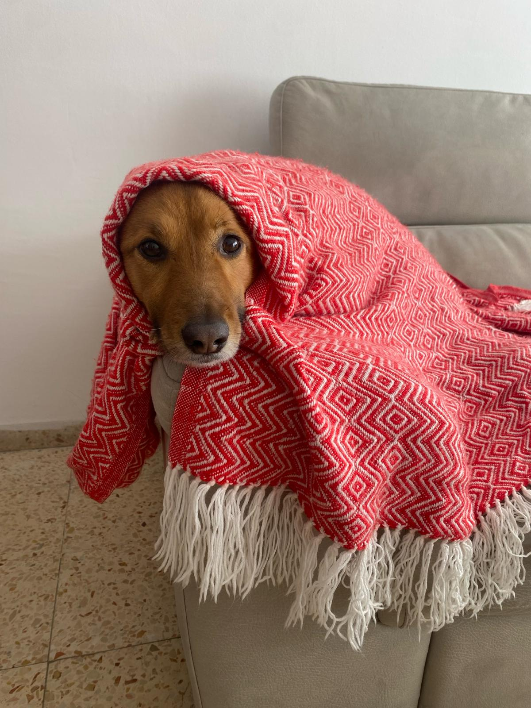
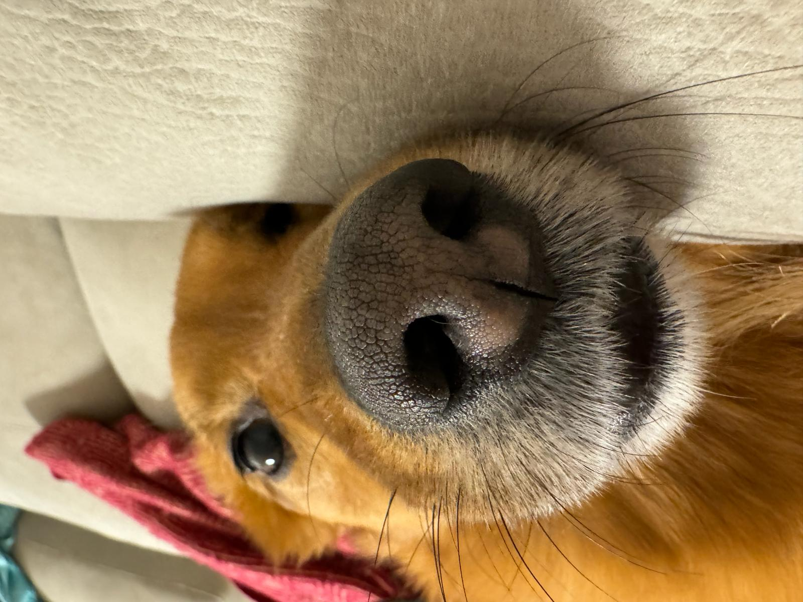
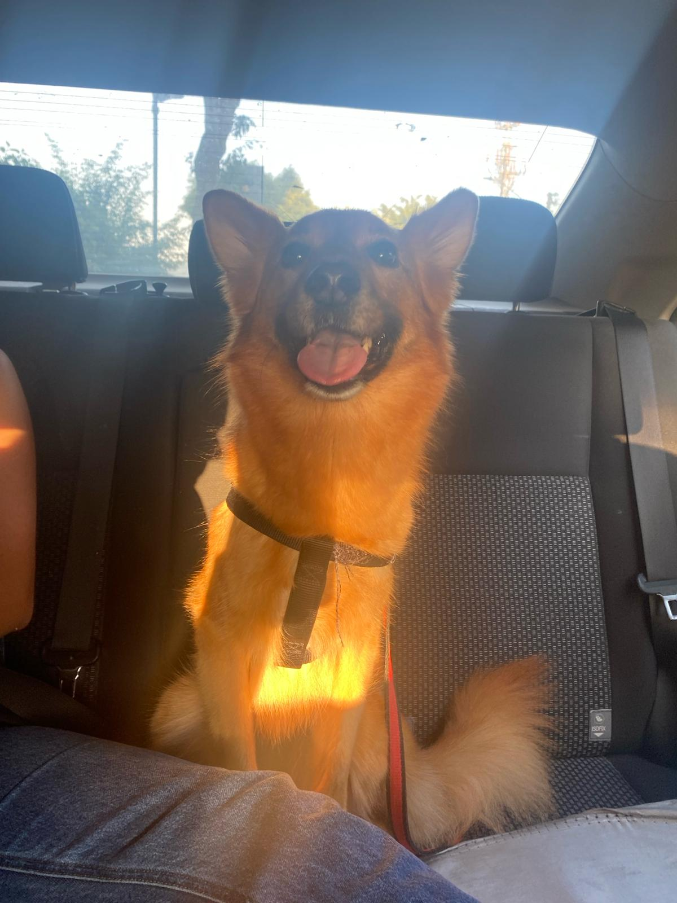
אנחנו חברות מאוד טובות, ובגלל שאנחנו חיות את היום־יום של ג׳ימי וניקה ומאוהבות בהם בלי הפסקה, תמיד עניין אותנו איך יראה השילוב שלהם. בעולם שבו ה־AI מתקדם בקצב מהיר ונותן להציץ לכל דמיון, החלטנו לקחת את זה צעד קדימה ולראות איך ייראו הגורים העתידיים שלהם.
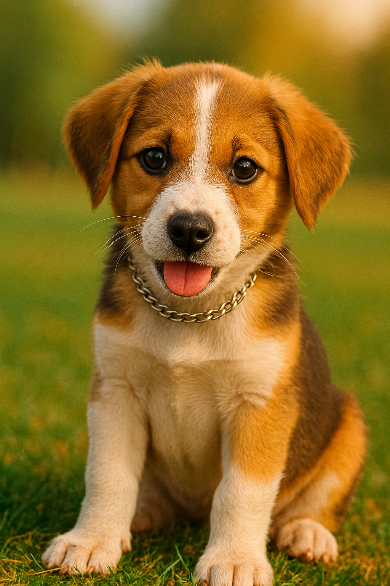
אנחנו נועה וענת, שתינו בנות 24, ושתינו אימצנו כלבים שהפכו לחלק בלתי נפרד מהחיים שלנו.
החברות בינינו התחילה הרבה לפני ג׳ימי וניקה, אבל הם אלה שהכניסו לקשר שלנו עומק,
צחוק והרבה רגעים שמלווים אותנו עד היום. אנחנו לומדות יחד מדעי המחשב במכללת רופין,
מבלות יחד, ומגדלות שני כלבים שמלווים כל יום בצבע אחר.
האתר הזה הוא שילוב של מה שאנחנו אוהבות: טכנולוגיה, יצירתיות והחיים עם הכלבים שלנו.
אם אתם רוצים לפנות אלינו, לשתף תמונות של הכלבים שלכם, או לשאול משהו – אנחנו פה.